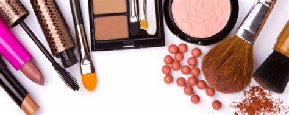
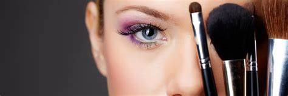

Makeup and self esteem
A place to be yourself

A autoestima é um valor que aprendemos e trabalhamos durante toda a nossa vida. São novos aprendizados todos os dias que nos levam a entender nosso corpo, personalidade e opiniões e que nos ensinam a entender o real sentido da autoestima.
Mas se tem uma grande aliada da mulher nesse longo caminho de descobertas e conhecimento próprio, é a maquiagem. É claro que todas nós devemos nos sentir lindas como somos, com ou sem make, mas basta uma pele bem feita, um delineado gatinho e um
batom que algo maior nasce: nossa força desperta e aí ninguém segura!
Sim, é comprovado que a maquiagem tem papel fundamental no que se refere à autoestima feminina. Por trás de cada contorno, existe uma história, de cada tom de batom, um humor diferente.
Muitos fatores diferentes que afetam a autoestima, incluindo a aparência física. A beleza e a autoestima costumam ser altamente relacionadas às mulheres, embora o grau de atratividade física de um homem para os outros também possa afetar sua autoestima.
Objetivo: Averiguar a influência da maquiagem para o resgate da autoestima em mulheres. Metodo: Foi pautada em um estudo descritivo com aplicação de questionário com vinte estudantes universitárias do Curso de Estética de uma universidade do sudoeste baiano.
Resultado: Viu-se que a maquiagem influencia na autoestima de mulheres, mudando o olhar subjetivo de definição de beleza fazendo estas gostarem mais de si mesmas. Conclusão: Notou-se o quão a maquiagem é um atributo fortalecedor da auto estima da mulher, empoderador
e que agrega as mulheres que fazem uso dela um sentimento de satisfação e que faz a mulher se sentir bem mais poderosa e satisfeita com a própria imagem

A autoimagem é uma representação interna e psíquica capaz de destruir a
autoestima, podendo ter como consequência prejuízos emocionais como quadros de
depressão e distúrbios alimentares. A autoestima é a avaliação que o sujeito faz de si
em termos de valores; é a forma como nos sentimos acerca de nós mesmos, afetando
crucialmente todos os aspectos da nossa experiência. A presença de uma autoestima
positiva leva o indivíduo a sentir-se confiante, adequado à vida, competente e
merecedor, sendo assim, indispensável para uma vida satisfatória. Essa
autovalorização não é sinônimo de narcisismo, portanto faz se necessária a busca
constante de formas de exprimi-la positivamente. Diante disto o mercado da beleza
dispõe de diversos instrumentos que auxiliam nessa busca da aceitação e
autovalorização. Um instrumento disponível é a automaquiagem aliada ao Visagismo,
que quando utilizada de forma correta e com produtos adequados ao biotipo pessoal,
pode contribuir positivamente nesse aspecto. Objetivo: Analisar a influência da
automaquiagem na autoestima das mulheres. Metodologia: Pesquisa exploratória,
descritiva, quase experimental e qualitativa, que ocorreu através da análise da escala
de autoestima de Rosenberg, entrevista e escala de satisfação pessoal, com um grupo
de 7 mulheres, com idade acima dos 18 anos, participantes de dois dias de workshop
prático de automaquiagem. Resultados: Melhora na visão positiva de si mesmas nas
voluntárias. O aumento positivo no nível de autoestima ocorreu, pois a utilização
correta das técnicas de automaquiagem aliadas ao Visagismo levou às participantes
a momentos de reflexão e análise sobre si mesmas, tornando o processo de
identificação de imagem mais claro e eficaz. Priorizando as belezas individuais e
desmistificando as técnicas de maquiagem de forma coerente com a personalidade e
gostos das voluntárias. Conclusão: A prática da Automaquiagem pode ser o passo
inicial que impulsionará a busca por diversas outras ferramentas para a manutenção
de uma autoestima positiva e saudável, levando assim a um aumento na qualidade de vida do sujeito.